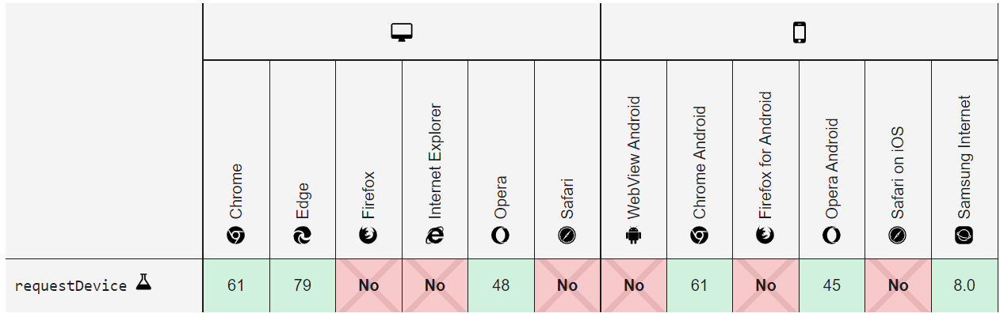
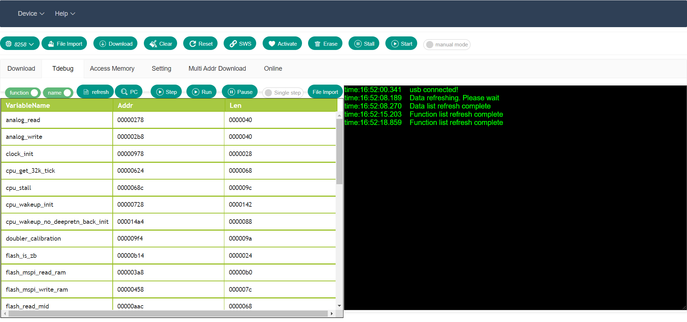
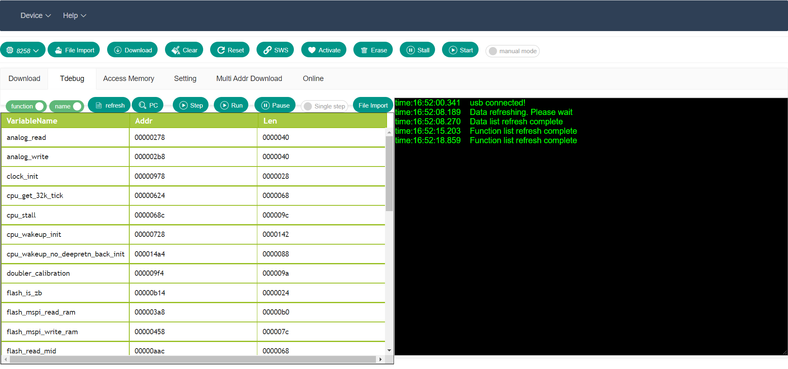
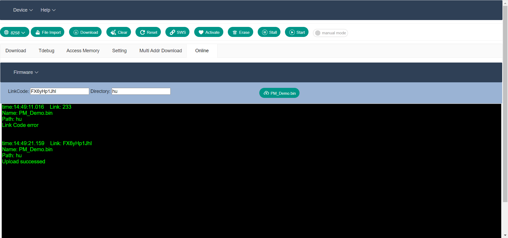
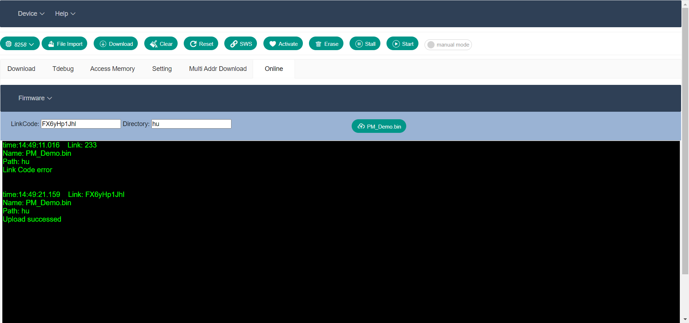

1、简介
“WEB BDT(Telink Burning and Debugging Tool)”适用于泰凌芯片的下载和调试。本文档介绍了如何使用“WEB BDT”。 Telink原来的调试下载工具为 BDT ，可在Windows平台下使用。为了工具能跨平台使用，同时用户可即开即用，而不必去下载和安装工具，Telink新推出了基于Web的下载调试工具 Web BDT (开源，可二次开发)。用户可以通过网页来进行程序的下载和调试，网页支持Windows，Linux，macOS，Android等平台，只需要一个兼容的网页浏览器即可，推荐使用较新版本的Chrome或者Edge。
1.1 功能概述
在开发过程中，通过使用BDT可将固件下载到目标板中，其主要功能包括：FLASH的擦除、固件的下载、芯片的激活、读写全局变量、变量列表的展示、单步调试、读取PC值、暂停和启动芯片、在线或本地多固件多地址下载、在线或本地"Burning EVK"固件更新、上传文件到服务器等。
点击"install"可将网页以原生应用的方式安装在电脑/手机上，并自动添加桌面快捷方式，用户也可将应用固定任务栏处。同时采用离线存储和后台同步技术，网页可在没有网络的条件下使用(从服务器上下载程序功能除外)。
"WEB BDT"支持Windows系统、macOS系统、Android系统、Linux系统，推荐使用较新版本的Edge/Chrome浏览器。浏览器支持情况如下图: 


 



 
